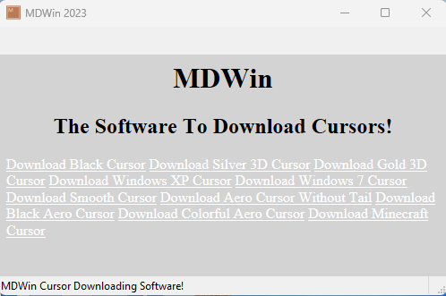

Let's assume that you have Windows installed on your computer and you would like to have another cursor on your PC. MDWin (Mouse Driver for Windows), can assist you to achieve this. Using MDWin allows you to download cursors for you. MDWin contains 10 Cursors which allows you to download the best cursor for your computer. MDWin supports Win32 and x64 Windows.
